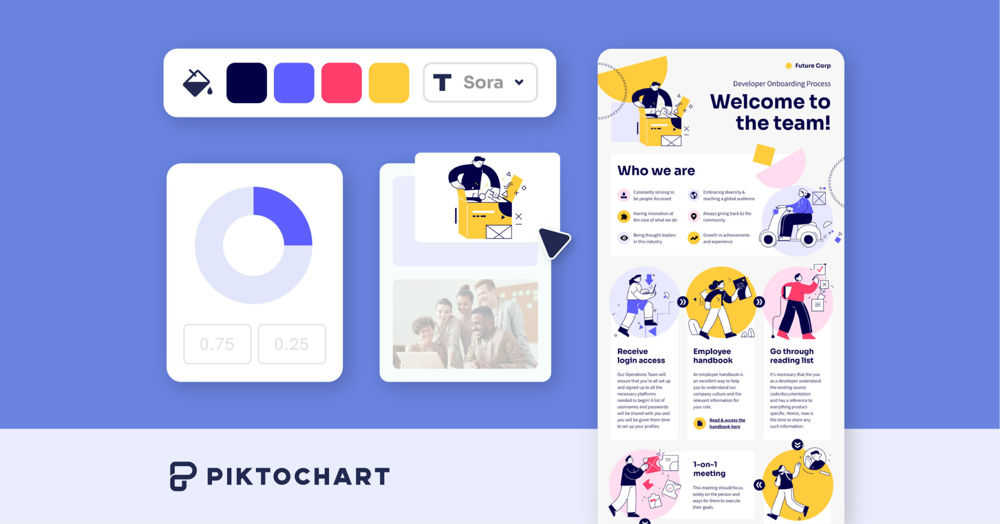

📊 ساخت اینفوگرافیک حرفهای با Piktochart
📰 اگه دادههای متنی داری و میخوای بدون دانش گرافیک اونها رو به خلاصه تصویری تبدیل کنی، Piktochart بهترین گزینهست. این ابزار با هوش مصنوعی و صدها قالب آماده، دادههای پیچیده رو به اینفوگرافیک و نمودار کاربردی تبدیل میکنه.
1️⃣ وارد سایت piktochart.com بشید و ثبتنام کنید.
2️⃣ بخش AI Visual Generator رو انتخاب کنید و متن یا موضوعتون رو وارد کنید.
3️⃣ رنگ، فونت و نمودارها رو ویرایش کرده و خروجی بگیرید.
🔹 هوش مصنوعی داخلی، متنهای طولانی رو آنالیز میکنه و ساختار بصری تحویل میده.
🔹 محدودیت رایگان: دانلود خروجی PNG همراه با واترمارک و سقف ساخت ۲ پروژه.
🔹 اکانت Pro: ماهانه ۱۴ دلار (خرید سالانه) یا ۲۹ دلار (خرید ماهانه) برای خروجی PDF کیفیت بالا، حذف واترمارک و دسترسی به فونت سفارشی.